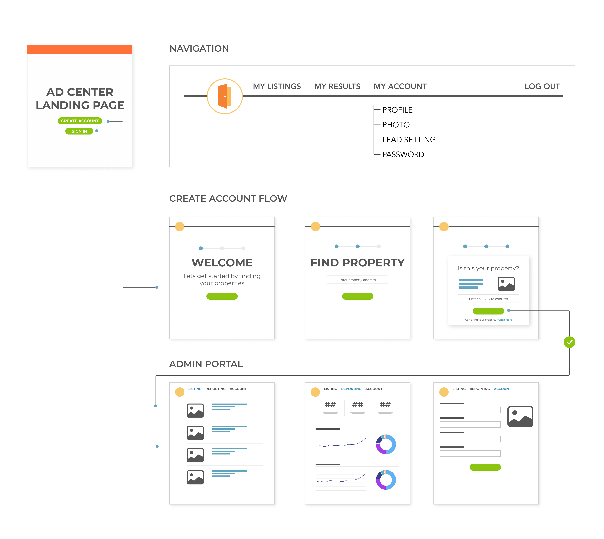

PROBLEM
What is this for?
Ad Center is a admin portal for homefinder.com real estate agents. Through a Qualaroo Survey we discovered that 61% of users didn’t understand how they were supposed to use Ad Center or how the functionality could help them. This application was a primary source of revenue for our company and if our users didn’t understand how to use it, we had a big problem.
RESEARCH
Automating Internal Processes
I worked with a project manager to define a couple areas of improvement. While
most issues could be solved with updating the information architecture and visual styling, we also wanted to see if there was anyway to automate some internal manual processes.
Sitting down with our support team, we learned that they were spending a majority of their time putting in tickets to manually associate properties to the agents so that they could see their listings within the tool.
We started to build out a flow where users could associate their own properties when creating an account. If the user could provide us a property and verify their MLS id, then we would be able to associate all of their listings with their account.

TESTING
Closing in on a Sale
We conducted a moderated user test with 5 real estate agents. We asked the users to walk through the current Advertiser Center pain points. We then asked them to walk through the redesigned application and the create an account flow. We received a lot of positive feedback around the redesign and the new create account flow but they still had questions about the tool complete capabilities.

SOLUTION
On-Board Flow
The project manager and I knew that there were a lot of different ways to handle this problem and decided to spend time developing a simple onboarding process that would appear the first time the user opened the application walking the user though the tool functionality.